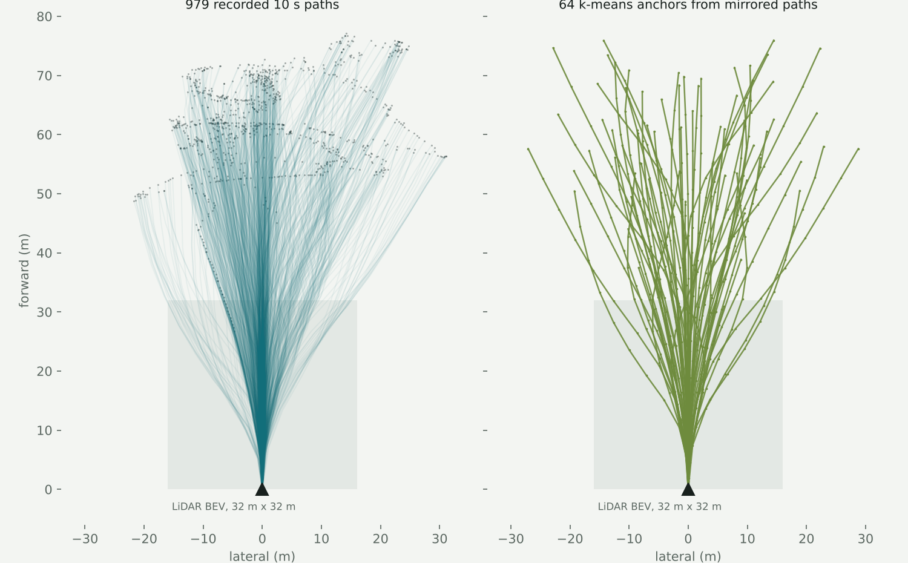

On-road planners lean on things off-road driving doesn't have: lane markings, HD maps, other cars to follow, and labelled boxes for every agent. On a forest trail, the only supervision you can count on is the path a human driver actually took. OREAM (Off-Road End-to-end Autonomous Model) is built around that constraint. It takes one camera frame, one LiDAR sweep, the vehicle's speed and a goal point, and predicts a sequence of future waypoints in the vehicle frame.
The design follows the end-to-end planners used for on-road driving, especially TransFuser for sensor fusion and VADv2 and Hydra-MDP for scoring a fixed vocabulary of candidate trajectories. Each piece is reworked for terrain that has no lanes and no map.
Architecture
Two planning heads share one fused backbone. The GRU head is the baseline; the anchor scorer is the main line of work.
Inputs
Camera. The 1920 x 1208 frame is resized to 704 pixels wide and a 256-pixel window is cut from the bottom, so the full horizontal field of view and the ground in front of the vehicle survive while the sky is dropped.
LiDAR. Each sweep becomes a 32 m x 32 m bird's-eye-view histogram at 8 pixels per metre with two channels: returns near the ground and returns above it. Upstream TransFuser splits those channels at a fixed height, which works in CARLA's flat world. On these trails the apparent ground drifted 0.65 m between a 6 m and a 30 m fit radius, so the split is measured against a local ground height map with 2 m cells and a 0.25 m margin (three times the measured surface roughness).
Clean-up. About a thousand returns per scan come off the vehicle itself and would paint a phantom obstacle on the ego cell, so points within 2.5 m are removed. Canopy more than 4 m above the local ground (about 10% of returns) is dropped because it is irrelevant to driving.
Goal. The goal is the last GPS fix of the drive, expressed in the vehicle frame with its direction kept and its length capped at 30 m, so the network sees familiar magnitudes whether the destination is 30 m or 900 m away.
The anchor planner
Instead of regressing one path, the anchor planner scores a vocabulary of candidate trajectories. The vocabulary comes from k-means over the recorded paths, mirrored left to right so it is symmetric, plus a dedicated stop anchor. Each anchor becomes a query that attends first to the camera tokens and then to the BEV tokens; a scorer combines that with speed, goal and a global scene feature.

Left: every recorded 10 s path in the current training drive, in the vehicle frame. Right: the anchor vocabulary built from them. The shaded square is all the LiDAR BEV can see, so most of a 10 s path is planned beyond direct sensing. Plotted from the project's own trajectory file.
Making the data usable
The source data is five CAVS ROS 1 bags recorded around Starkville between 2019 and 2020: a powerline cut, a fog-covered trail, a farm back loop, a north slope and a field. Together that is about 57 GB and roughly 10 minutes of driving with two different LiDARs (a Velodyne and an Ouster OS1-64). The experiments below train on one drive and hold out its final stretch. Very little of the raw data lines up out of the box, so most of the early work went into an extraction tool that makes it trustworthy.
No usable timestamps. The Ouster stamps clouds from its own boot clock, and the camera clock runs about 34 days behind the bag. The only clock all sensors share is the time each message was recorded into the bag. Pairing by that clock puts images and scans within about 5 ms of each other, with a worst case near 100 ms.
A LiDAR facing backwards. On the Ouster bags the static transform rotates the sensor 180 degrees from the frame the camera calibration uses, so without a fix the BEV shows what is behind the vehicle as ahead. I verified the fix by projecting each cloud into the image and checking that points to the vehicle's left land on the image's left: the correlation is between -0.92 and -0.97 on all five bags.
A calibration published backwards. One bag publishes the camera-to-LiDAR transform in the opposite direction. Taken literally, every point projects outside the image; inverted, 4,527 points land in it with the expected left-right correlation.
Downscaled images with full-size intrinsics. Three bags publish 720 x 452 images but calibration captured at 1024 x 644, so the camera matrix has to be scaled by about 0.703 or the principal point is wrong.
What broke, and what fixed it
The planner learned to always stop. With a per-anchor focal loss, every anchor learned to predict "not me", the scores went flat, and the arg-max fell to the stop anchor in slot 0 on the whole validation set. The final-displacement error repeated exactly across epochs because it equalled the distance the vehicle travelled.
The fix was a single softmax over all anchors trained against a soft target, where anchors close to the recorded path share the probability mass. That run worked, but sat at a loss of ln(256), uniform over 256 anchors, for 11 epochs before breaking out.
The 11-epoch plateau. I traced it to un-normalised feature magnitudes coming out of the fusion backbone. Adding LayerNorm on the image and BEV tokens and on the fused vector, a skip path from the anchor embedding to the scorer, and a normalised goal point removed the plateau entirely: validation FDE reached 1.52 m at epoch 2, a level that previously took 13 epochs.
On a short horizon (four waypoints over 2 s, 153 held-out frames from the end of the drive), the numbers so far are:
Planner
Best val FDE
Notes
Anchor scorer, 256 anchors
1.07 m
overfits after about epoch 3
Anchor scorer, 64 mirrored anchors, augmented
0.89 m
mirror and small-yaw augmentation, frozen image encoder for 3 epochs
GRU decoder
0.71 m
same split, no augmentation
The GRU baseline currently wins, and the trajectory data explains why: the held-out stretch is driven faster than the training data (median 2 s reach of 14.6 m versus 12.4 m), and k-means pulls extreme paths toward the average, so for the fastest quarter of frames even the best anchor ends 0.65 m short. That motivated a residual head that predicts a small per-waypoint correction to the chosen anchor. On a controlled test with coarse anchors it cut FDE from 0.76 m to 0.22 m.
Where it is going
Physically valid candidates. A kinematic bicycle-model sampler (rear-axle reference, 20 ms midpoint integration, limits on steering rate and lateral acceleration) generates candidates that a vehicle can actually drive, picked by farthest-point sampling in mirrored pairs so the set stays left-right symmetric. I checked it against closed-form results: a constant-steer circle matches L / tan(δ) exactly, and braking distance is within 6 cm.
Traversability in the loop. I ported CAVS's fast terrain traversability estimator from the NATURE autonomy stack (Goodin et al., SPIE 2021) to produce per-frame drivable, blocked and unknown maps in the same grid as the planner's BEV, so a LiDAR traversability cost can veto anchors the imitation scorer likes.
Longer horizons and closed loop. The current target is 10 waypoints over 10 s toward the drive's endpoint. Next is cross-season evaluation in the MAVS simulator and closed-loop testing in NVIDIA AlpaSim.